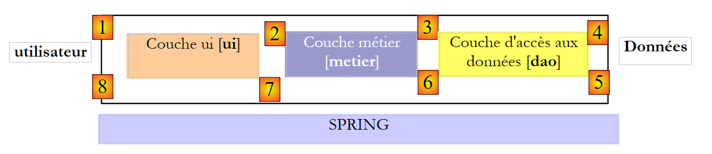
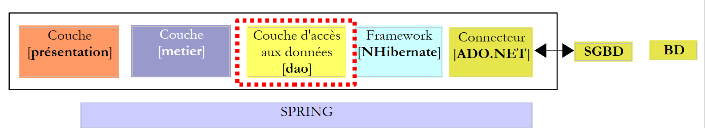
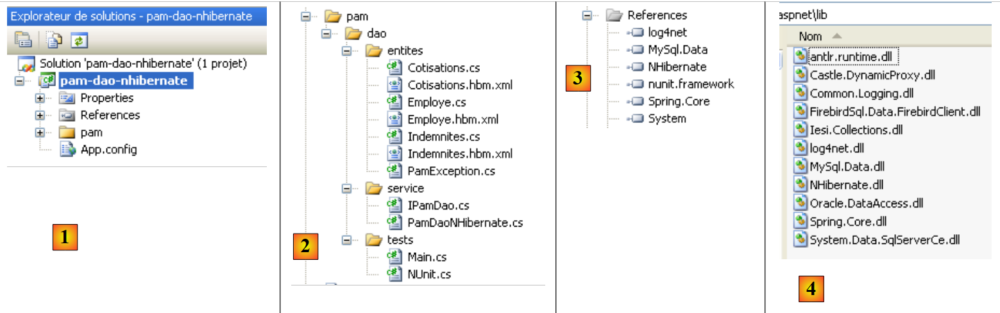
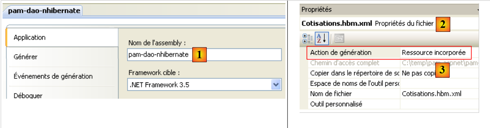
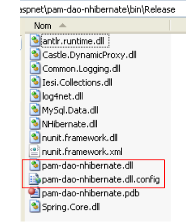
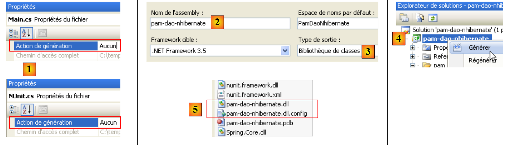
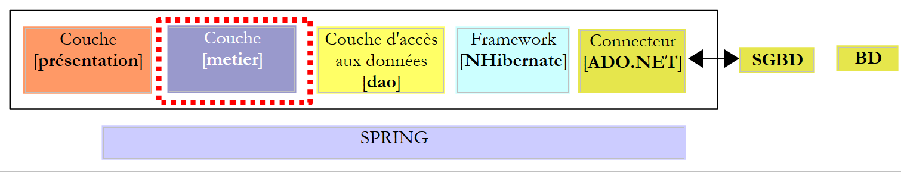
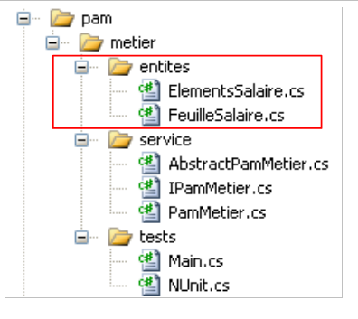
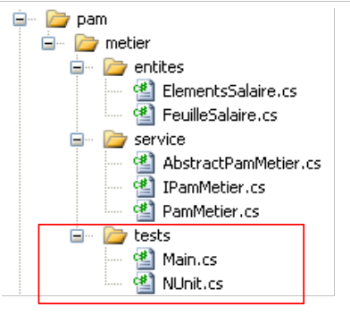

7. A aplicação [SimuPaie] – versão 3 – arquitetura de 3 camadas com NHibernate
Leituras recomendadas: «Linguagem C# 2008, Capítulo 4: Arquiteturas de 3 camadas, testes NUnit, framework Spring».
7.1. Arquitetura geral da aplicação
A aplicação [SimuPaie] terá agora a seguinte estrutura de três camadas:
 |
- a camada [1-dao] (DAO = Data Access Object) encarregar-se-á do acesso aos dados.
- A camada [2-métier] encarregar-se-á da lógica de negócio da aplicação, ou seja, o cálculo da folha de pagamentos.
- A camada [3-ui] (ui = User Interface) encarregar-se-á da apresentação dos dados ao utilizador e da execução das suas solicitações. Designamos por [Application] o conjunto de módulos que asseguram esta função. Esta camada é o ponto de contacto com o utilizador.
- As três camadas serão tornadas independentes graças à utilização de interfaces .NET
- A integração das diferentes camadas será realizada pelo Spring IoC
O processamento de um pedido de um cliente decorre de acordo com as seguintes etapas:
- o cliente envia um pedido à aplicação.
- A aplicação processa essa solicitação. Para tal, pode necessitar da ajuda da camada [métier], que, por sua vez, pode necessitar da camada [dao] caso seja necessário trocar dados com a base de dados.
- A aplicação recebe uma resposta da camada [métier]. Com base nessa resposta, envia a vista (= a resposta) adequada ao cliente.
Tomemos como exemplo o cálculo do salário de uma ama. Este processo irá requerer várias etapas:
 |
- A camada [ui] terá de solicitar ao utilizador
- a identidade da pessoa cujo salário se pretende calcular
- o número de dias trabalhados por essa pessoa
- o número de horas trabalhadas
- Para tal, terá de apresentar ao utilizador a lista de pessoas (apelido, nome próprio, SS) presentes na tabela [EMPLOYES], para que o utilizador escolha uma delas. A camada [ui] utilizará o caminho [2, 3, 4, 5, 6, 7] para as obter. A operação [2] corresponde ao pedido da lista de funcionários, enquanto a operação [7] corresponde à resposta a esse pedido. Feito isto, a camada [ui] pode apresentar a lista de funcionários ao utilizador através da [8].
- O utilizador irá transmitir à camada [ui] o número de dias trabalhados, bem como o número de horas trabalhadas. Trata-se da operação [1] acima referida. Durante esta etapa, o utilizador interage apenas com a camada [ui]. É esta camada que irá, nomeadamente, verificar a validade dos dados introduzidos. Feito isto, o utilizador solicitará o cálculo da folha de pagamento.
- A camada [ui] solicitará à camada de negócio que efetue esse cálculo. Para tal, transmitirá a esta os dados que recebeu do utilizador. Trata-se da operação [2].
- A camada [metier] necessita de determinadas informações para realizar o seu trabalho:
- informações mais completas sobre a pessoa (morada, índice, ...)
- os subsídios associados ao seu índice
- as taxas das diferentes contribuições sociais a deduzir do salário bruto
Irá solicitar estas informações à camada [dao] através do caminho [3, 4, 5, 6]. [3] é o pedido inicial e [6] a resposta a esse pedido.
- Com todos os dados de que necessitava, a camada [metier] calcula a folha de pagamento da pessoa selecionada pelo utilizador.
- A camada [metier] pode agora responder à solicitação da camada [ui] efetuada em (d). Este é o caminho [7].
- A camada [ui] irá formatar estes resultados para os apresentar ao utilizador de forma adequada e, em seguida, exibi-los. Trata-se do caminho [8].
- É possível imaginar que estes resultados devam ser guardados num ficheiro ou numa base de dados. Isto pode ser feito de forma automática. Neste caso, após a operação (f), a camada [metier] irá solicitar à camada [dao] que registe os resultados. Será o caminho [3, 4, 5, 6]. Isto também pode ser feito a pedido do utilizador. Será o caminho [1-8] que será utilizado pelo ciclo pedido-resposta.
Vê-se nesta descrição que uma camada utiliza os recursos da camada à sua direita, nunca da que está à sua esquerda.
A nossa primeira implementação desta arquitetura de 3 camadas será uma aplicação ASP.NET, em que
- as camadas [dao] e [metier] serão implementadas por DLL
- a camada [ui] será implementada pelo formulário web da versão 1 (ver parágrafo 4.2.1).
Começamos por implementar a camada [dao] com o framework NHibernate.
7.2. A camada [dao] de acesso aos dados
 |
7.2.1. O projeto Visual Studio C# da camada [dao]
O projeto do Visual Studio da camada [dao] é o seguinte:
 |
- em [1], o projeto na sua totalidade
- em [2], as diferentes classes do projeto
- em [3], as referências do projeto.
- em [4], uma pasta [lib] na qual foram reunidos os DLL necessários para os diferentes projetos que se seguirão
Nas referências [3] do projeto, encontram-se os seguintes DLL:
- NHibernate: para o ORM NHibernate
- MySql.Data: o piloto ADO.NET do SGBD MySQL
- Spring.Core: para o framework Spring
- log4net: uma biblioteca de registos
- nunit.framework: uma biblioteca de testes unitários
Estas referências foram retiradas da pasta [lib] [4]. Deve-se certificar-se de que todas estas referências tenham a propriedade «Cópia local» definida como «True» [5]:
 |
7.2.2. As entidades da camada [dao]
 |
As entidades (objetos) necessárias para a camada [dao] foram reunidas na pasta [entites] do projeto. Algumas já nos são conhecidas: [Cotisations], descrita no parágrafo 6.3.2.1; [Employe], descrita no parágrafo 6.3.2.3; [Indemnites], descrita no parágrafo 6.3.2.2. Todas elas encontram-se no espaço de nomes [Pam.Dao.Entites].
A classe [Employe] evolui da seguinte forma:
namespace Pam.Dao.Entites {
public class Employe {
// propriedades automáticas
public virtual int Id { get; set; }
public virtual int Version { get; set; }
public virtual string SS { get; set; }
public virtual string Nom { get; set; }
public virtual string Prenom { get; set; }
public virtual string Adresse { get; set; }
public virtual string Ville { get; set; }
public virtual string CodePostal { get; set; }
public virtual Indemnites Indemnites { get; set; }
// construtores
public Employe() {
}
// ToString
public override string ToString() {
return string.Format("[{0},{1},{2},{3},{4},{5},{6}]", SS, Nom, Prenom, Adresse, Ville, CodePostal, Indemnites);
}
}
}
7.2.3. A classe [PamException]
A camada [dao] é responsável pela troca de dados com uma fonte externa. Esta troca pode falhar. Por exemplo, se as informações forem solicitadas a um serviço remoto na Internet, a sua obtenção falhará em caso de qualquer falha na rede. Neste tipo de erros, é habitual em Java lançar uma exceção. Se a exceção não for do tipo [RunTimeException] ou derivado, é necessário indicar na assinatura do método que este lança (throws) uma exceção. Em .NET, todas as exceções são não controladas, c.a.d. equivalentes ao tipo [RunTimeException] do Java. Não é, portanto, necessário declarar que os métodos [GetAllIdentitesEmployes, GetEmploye, GetCotisations] são suscetíveis de lançar uma exceção.
No entanto, é interessante poder diferenciar as exceções umas das outras, uma vez que o seu tratamento pode variar. Assim, o código que gere vários tipos de exceções pode ser escrito da seguinte forma:
try{
... code pouvant générer divers types d'exceptions
}catch (Exception1 ex1){
...on gère un type d'exceptions
}catch (Exception2 ex2){
...on gère un autre type d'exceptions
}finally{
...
}
Assim, criamos um tipo de exceções para a camada [dao] da nossa aplicação. Trata-se do seguinte tipo [PamException]:
using System;
namespace Pam.Dao.Entites {
public class PamException : Exception {
// o código do erro
public int Code { get; set; }
// construtores
public PamException() {
}
public PamException(int Code)
: base() {
this.Code = Code;
}
public PamException(string message, int Code)
: base(message) {
this.Code = Code;
}
public PamException(string message, Exception ex, int Code)
: base(message, ex) {
this.Code = Code;
}
}
}
- linha 2: a classe pertence ao espaço de nomes [Pam.Dao.Entites]
- linha 4: a classe deriva da classe [Exception]
- linha 7: possui uma propriedade pública [Code], que é um código de erro
- Na nossa camada [dao], utilizaremos dois tipos de construtores:
- o das linhas 18-21, que pode ser utilizado como mostrado abaixo:
- (continuação)
- ou o das linhas 23-26, destinado a reportar uma exceção já ocorrida, encapsulando-a numa exceção do tipo [PamException]:
try{
....
}catch (IOException ex){
// encapsula-se a exceção
throw new PamException("Problème d'accès aux données",ex,10);
}
Este segundo método tem a vantagem de não perder a informação que a primeira exceção possa conter.
7.2.4. Os ficheiros de tabelas de mapeamento <--> classes do NHibernate
Voltemos à arquitetura da aplicação:
 |
Na leitura, o framework NHibernate explora os dados da base de dados e transforma-os em objetos cujas classes acabámos de apresentar. Na gravação, faz o inverso: a partir de objetos, cria, atualiza e elimina linhas nas tabelas da base de dados. Os ficheiros que asseguram a transformação tabelas <--> classes já foram apresentados:
|
- o ficheiro [Cotisations.hbm.xml] apresentado no parágrafo 6.3.2.1 estabelece a correspondência entre a tabela [COTISATIONS] e a classe [Cotisations]
<?xml version="1.0" encoding="utf-8" ?>
<hibernate-mapping xmlns="urn:nhibernate-mapping-2.2"
namespace="Pam.Dao.Entites" assembly="pam-dao-nhibernate">
<class name="Cotisations" table="COTISATIONS">
<id name="Id" column="ID">
<generator class="native" />
</id>
<version name="Version" column="VERSION"/>
<property name="CsgRds" column="CSGRDS" not-null="true"/>
<property name="Csgd" column="CSGD" not-null="true"/>
<property name="Retraite" column="RETRAITE" not-null="true"/>
<property name="Secu" column="SECU" not-null="true"/>
</class>
</hibernate-mapping>
- O ficheiro [Employe.hbm.xml] apresentado no parágrafo 6.3.2.3 estabelece a correspondência entre a tabela [EMPLOYES] e a classe [Employe]
<?xml version="1.0" encoding="utf-8" ?>
<hibernate-mapping xmlns="urn:nhibernate-mapping-2.2"
namespace="Pam.Dao.Entites" assembly="pam-dao-nhibernate">
<class name="Employe" table="EMPLOYES">
<id name="Id" column="ID">
<generator class="native" />
</id>
<version name="Version" column="VERSION"/>
<property name="SS" column="SS" length="15" not-null="true" unique="true"/>
<property name="Nom" column="NOM" length="30" not-null="true"/>
<property name="Prenom" column="PRENOM" length="20" not-null="true"/>
<property name="Adresse" column="ADRESSE" length="50" not-null="true" />
<property name="Ville" column="VILLE" length="30" not-null="true"/>
<property name="CodePostal" column="CP" length="5" not-null="true"/>
<many-to-one name="Indemnites" column="INDEMNITE_ID" cascade="save-update" lazy="false"/>
</class>
</hibernate-mapping>
- O ficheiro [Indemnites.hbm.xml] apresentado no parágrafo 6.3.2.2 estabelece a correspondência entre a tabela [INDEMNITES] e a classe [Indemnites]
<?xml version="1.0" encoding="utf-8" ?>
<hibernate-mapping xmlns="urn:nhibernate-mapping-2.2"
namespace="Pam.Dao.Entites" assembly="pam-dao-nhibernate">
<class name="Indemnites" table="INDEMNITES">
<id name="Id" column="ID">
<generator class="native" />
</id>
<version name="Version" column="VERSION"/>
<property name="Indice" column="INDICE" not-null="true" unique="true"/>
<property name="BaseHeure" column="BASE_HEURE" not-null="true"/>
<property name="EntretienJour" column="ENTRETIEN_JOUR" not-null="true"/>
<property name="RepasJour" column="REPAS_JOUR" not-null="true" />
<property name="IndemnitesCp" column="INDEMNITES_CP" not-null="true"/>
</class>
</hibernate-mapping>
Note-se que, na baliza <hibernate-mapping> destes ficheiros (linha 2), existem os seguintes atributos:
- namespace : Pam.Dao.Entites. As classes [Cotisations], [Employe] e [Indemnites] devem encontrar-se neste espaço de nomes.
- assembly: pam-dao-nhibernate. Os ficheiros de mapeamento [*.hbm.xml] devem ser encapsulados num DLL denominado [pam-dao-nhibernate]. Para obter este resultado, o projeto C# é configurado da seguinte forma:
 |
- em [1], o assembly do projeto tem o nome [pam-dao-nhibernate]
- em [2], os ficheiros de mapeamento [*.hbm.xml] são integrados no assembly do projeto como [3]
7.2.5. A interface [IPamDao] da camada [dao]
Voltemos à arquitetura da nossa aplicação:
 |
Em casos simples, podemos partir da camada [metier] para descobrir as interfaces da aplicação. Para funcionar, esta necessita de dados:
- já disponíveis em ficheiros, bases de dados ou através da rede. Estes são fornecidos pela camada [dao].
- ainda não disponíveis. Nesse caso, são fornecidos pela camada [ui], que os obtém junto do utilizador da aplicação.
Que interface deve a camada [dao] disponibilizar à camada [metier]? Quais são as interações possíveis entre estas duas camadas? A camada [dao] deve fornecer os seguintes dados à camada [metier]:
- a lista de amas, para permitir que o utilizador escolha uma em particular
- informações completas sobre a pessoa escolhida (morada, índice, ...)
- os subsídios associados ao índice da pessoa
- as taxas das diferentes contribuições sociais
Estas informações são, de facto, conhecidas antes do cálculo da folha de pagamento e podem, portanto, ser armazenadas. No sentido [metier] -> [dao], a camada [metier] pode solicitar à camada [dao] que registe o resultado do cálculo da folha de pagamento. Não o faremos aqui.
Com estas informações, poderíamos tentar uma primeira definição da interface da camada [dao]:
using Pam.Dao.Entites;
namespace Pam.Dao.Service {
public interface IPamDao {
// lista de todas as identidades dos funcionários
Employe[] GetAllIdentitesEmployes();
// um funcionário específico com os seus subsídios
Employe GetEmploye(string ss);
// lista de todas as contribuições
Cotisations GetCotisations();
}
}
- linha 1: importa-se o espaço de nomes das entidades da camada [dao].
- linha 3: a camada [dao] encontra-se no espaço de nomes [Pam.Dao.Service]. Os elementos do espaço de nomes [Pam.Dao.Entites] podem ser criados em várias instâncias. Os elementos do espaço de nomes [Pam.Dao.Service] são criados numa única instância (singleton). Foi isso que justificou a escolha dos nomes dos espaços de nomes.
- linha 4: a interface chama-se [IPamDao]. Define três métodos:
- linha 6, [GetAllIdentitesEmployes] devolve um array de objetos do tipo [Employe] que representa a lista de amas numa forma simplificada (apelido, nome próprio, SS).
- na linha 8, [GetEmploye] devolve um objeto [Employe]: o trabalhador cujo número de segurança social foi passado como parâmetro ao método, juntamente com as indemnizações associadas ao seu índice.
- linha 10, [GetCotisations] devolve o objeto [Cotisations], que encapsula as taxas das diferentes contribuições sociais a deduzir do salário bruto.
7.3. Implementação e testes da camada [dao]
7.3.1. O projeto do Visual Studio
O projeto do Visual Studio já foi apresentado. Recorde-se que:
 |
- em [1], o projeto na sua totalidade
- em [2], as diferentes classes do projeto. A pasta [entites] contém as entidades manipuladas pela camada [dao], bem como os ficheiros de mapeamento NHibernate. A pasta [service] contém a interface [IPamDao] e a sua implementação [PamDaoNHibernate]. A pasta [tests] contém um teste de consola [Main.cs] e um teste unitário [NUnit.cs].
- Em [3], as referências do projeto.
7.3.2. O programa de teste de consola [Main.cs]
O programa de teste [Main.cs] é executado na seguinte arquitetura:
 |
É responsável por testar os métodos da interface [IPamDao]. Um exemplo básico poderia ser o seguinte:
using System;
using Pam.Dao.Entites;
using Pam.Dao.Service;
using Spring.Context.Support;
namespace Pam.Dao.Tests {
public class MainPamDaoTests {
public static void Main() {
try {
// instanciação da camada [dao]
IPamDao pamDao = (IPamDao)ContextRegistry.GetContext().GetObject("pamdao");
// lista das identidades dos funcionários
foreach (Employe Employe in pamDao.GetAllIdentitesEmployes()) {
Console.WriteLine(Employe.ToString());
}
// um funcionário com as suas indemnizações
Console.WriteLine("------------------------------------");
Console.WriteLine(pamDao.GetEmploye("254104940426058"));
Console.WriteLine("------------------------------------");
// lista de contribuições
Cotisations cotisations = pamDao.GetCotisations();
Console.WriteLine(cotisations.ToString());
} catch (Exception ex) {
// exibição de exceção
Console.WriteLine(ex.ToString());
}
//pausa
Console.ReadLine();
}
}
}
- linha 11: solicita-se ao Spring uma referência à camada [dao].
- linhas 13-15: teste do método [GetAllIdentitesEmployes] da interface [IPamDao]
- linha 18: teste do método [GetEmploye] da interface [IPamDao]
- linha 21: teste do método [GetCotisations] da interface [IPamDao]
O Spring, o NHibernate e o log4net são configurados pelo seguinte ficheiro [App.config] :
<?xml version="1.0" encoding="utf-8" ?>
<configuration>
<!-- secções de configuração -->
<configSections>
<section name="log4net" type="log4net.Config.Log4NetConfigurationSectionHandler,log4net" />
<sectionGroup name="spring">
<section name="objects" type="Spring.Context.Support.DefaultSectionHandler, Spring.Core" />
<section name="context" type="Spring.Context.Support.ContextHandler, Spring.Core" />
</sectionGroup>
<section name="hibernate-configuration" type="NHibernate.Cfg.ConfigurationSectionHandler, NHibernate" />
</configSections>
<!-- configuração do Spring -->
<spring>
<context>
<resource uri="config://spring/objects" />
</context>
<objects xmlns="http://www.springframework.net">
<object id="pamdao" type="Pam.Dao.Service.PamDaoNHibernate, pam-dao-nhibernate" init-method="init" destroy-method="destroy"/>
</objects>
</spring>
<!-- configuração NHibernate -->
<hibernate-configuration xmlns="urn:nhibernate-configuration-2.2">
<session-factory>
<property name="connection.provider">NHibernate.Connection.DriverConnectionProvider</property>
<property name="connection.driver_class">NHibernate.Driver.MySqlDataDriver</property>
<property name="dialect">NHibernate.Dialect.MySQLDialect</property>
<property name="connection.connection_string">
Server=localhost;Database=dbpam_nhibernate;Uid=root;Pwd=;
</property>
<property name="show_sql">false</property>
<mapping assembly="pam-dao-nhibernate"/>
</session-factory>
</hibernate-configuration>
<!-- Esta secção contém as definições de configuração do log4net -->
<!-- NOTE IMPORTANTE: os registos não estão ativos por predefinição. É necessário ativá-los por programa
avec l'instruction log4net.Config.XmlConfigurator.Configure();
! -->
<log4net>
...
</log4net>
</configuration>
A configuração do NHibernate (linha 10, linhas 25-36) foi explicada no parágrafo 6.3.1. De notar a linha 34, que indica que os ficheiros de mapeamento se encontram no assembly [pam-dao-nhibernate]. Este é o assembly do projeto.
A configuração do Spring é feita nas linhas 6-9 e 15-22. A linha 20 define o objeto [pamdao] utilizado pelo programa de consola [Main.cs]. A baliza <object> tem aqui os seguintes atributos:
- type: define a classe a instanciar. É a classe [PamDaoNHibernate] que implementa a interface [IPamDao]. Esta pode ser encontrada no ficheiro DLL [pam-dao-nhibernate] do projeto.
- init-method: o método da classe [PamDaoNHibernate] a ser executado após a instanciação da classe
- destroy-method: o método da classe [PamDaoNHibernate] a ser executado quando o contentor Spring for destruído no final da execução do projeto.
A execução realizada com a base de dados descrita no parágrafo 6.2 produz o seguinte resultado na consola:
- linhas 1-2: os 2 funcionários do tipo [Employe] com as seguintes informações [SS, Nom, Prenom]
- linha 4: o colaborador do tipo [Employe] com o n.º de segurança social [254104940426058]
- linha 5: as taxas de contribuição
7.3.3. Registo da classe [PamDaoNHibernate]
 |
A interface [IPamDao] implementada pela camada [dao] é a seguinte:
using Pam.Dao.Entites;
namespace Pam.Dao.Service {
public interface IPamDao {
// lista de todas as identidades dos funcionários
Employe[] GetAllIdentitesEmployes();
// um funcionário específico com os seus subsídios
Employe GetEmploye(string ss);
// lista de todas as contribuições
Cotisations GetCotisations();
}
}
Questão: escreva o código da classe [PamDaoNHibernate] que implementa a interface [IPamDao] acima, utilizando o framework NHibernate configurado conforme apresentado anteriormente. Serão também implementados os métodos init e destroy, executados pelo Spring. O método init criará a classe SessionFactory, a partir da qual serão obtidos os objetos Session. O método destroy encerrará este SessionFactory. Utilizaremos os exemplos do parágrafo 6.5.
Restrições:
Supõe-se que alguns dos dados solicitados à camada [dao] possam caber na totalidade na memória. Assim, para melhorar o desempenho, a classe [PamDaoNHibernate] armazenará:
- a tabela [EMPLOYES] na forma (SS, NOM, PRENOM) necessária ao método [GetAllIdentitesEmployes] na forma de uma matriz de objetos do tipo [Employe]
- a tabela [COTISATIONS] sob a forma de um único objeto do tipo [Cotisations]
Isto será feito no método [init] da classe. O esboço da classe [PamDaoNHibernate] poderia ser o seguinte:
using System;
...
namespace Pam.Dao.Service {
class PamDaoNHibernate : IPamDao {
// campos privados
private Cotisations cotisations;
private Employe[] employes;
private ISessionFactory sessionFactory = null;
// inicialização
public void init() {
try {
// inicialização da fábrica
sessionFactory = new Configuration().Configure().BuildSessionFactory();
// recuperam-se as taxas de contribuição e os funcionários para as armazenar em cache
.......................
}
// encerramento SessionFactory
public void destroy() {
if (sessionFactory != null) {
sessionFactory.Close();
}
}
// lista de todas as identidades dos funcionários
public Employe[] GetAllIdentitesEmployes() {
return employes;
}
// um funcionário específico com os seus subsídios
public Employe GetEmploye(string ss) {
................................
}
// lista de contribuições
public Cotisations GetCotisations() {
return cotisations;
}
}
}
7.3.4. Testes unitários com NUnit
Leituras recomendadas: «Linguagem C# 2008, Capítulo 4: Arquiteturas de 3 camadas, testes NUnit, framework Spring».
O teste anterior tinha sido visual: verificava-se no ecrã se se obtinham efetivamente os resultados esperados. Este método é insuficiente num ambiente profissional. Os testes devem ser sempre automatizados ao máximo e ter como objetivo não necessitar de qualquer intervenção humana. O ser humano está, de facto, sujeito à fadiga e a sua capacidade de verificar testes diminui ao longo do dia. A ferramenta [NUnit] ajuda a concretizar essa automatização. Está disponível no URL [http://www.nunit.org/].
O projeto do Visual Studio da camada [dao] irá evoluir da seguinte forma:
 |
- para [1]; o programa de teste [NUnit.cs]
- para [2,3]; o projeto irá gerar um DLL denominado [pam-dao-nhibernate.dll]
- em [4], a referência ao DLL do framework NUnit: [nunit.framework.dll]
- em [5], a classe [Main.cs] não será incluída na DLL [pam-dao-nhibernate]
- em [6], a classe [NUnit.cs] será incluída na DLL [pam-dao-nhibernate]
A classe de teste NUnit é a seguinte:
using System.Collections;
using NUnit.Framework;
using Pam.Dao.Service;
using Pam.Dao.Entites;
using Spring.Objects.Factory.Xml;
using Spring.Core.IO;
using Spring.Context.Support;
namespace Pam.Dao.Tests {
[TestFixture]
public class NunitPamDao : AssertionHelper {
// a camada [dao] a testar
private IPamDao pamDao = null;
// fabricante
public NunitPamDao() {
// instanciação da camada [dao]
pamDao = (IPamDao)ContextRegistry.GetContext().GetObject("pamdao");
}
// inicialização
[SetUp]
public void Init() {
}
[Test]
public void GetAllIdentitesEmployes() {
// verificação do número de funcionários
Expect(2, EqualTo(pamDao.GetAllIdentitesEmployes().Length));
}
[Test]
public void GetCotisations() {
// verificação da taxa de contribuições
Cotisations cotisations = pamDao.GetCotisations();
Expect(3.49, EqualTo(cotisations.CsgRds).Within(1E-06));
Expect(6.15, EqualTo(cotisations.Csgd).Within(1E-06));
Expect(9.39, EqualTo(cotisations.Secu).Within(1E-06));
Expect(7.88, EqualTo(cotisations.Retraite).Within(1E-06));
}
[Test]
public void GetEmployeIdemnites() {
// verificação de indivíduos
Employe employe1 = pamDao.GetEmploye("254104940426058");
Employe employe2 = pamDao.GetEmploye("260124402111742");
Expect("Jouveinal", EqualTo(employe1.Nom));
Expect(2.1, EqualTo(employe1.Indemnites.BaseHeure).Within(1E-06));
Expect("Laverti", EqualTo(employe2.Nom));
Expect(1.93, EqualTo(employe2.Indemnites.BaseHeure).Within(1E-06));
}
[Test]
public void GetEmployeIdemnites2() {
// verificação de indivíduo inexistente
bool erreur = false;
try {
Employe employe1 = pamDao.GetEmploye("xx");
} catch {
erreur = true;
}
Expect(erreur, True);
}
}
}
- linha 11: a classe possui o atributo [TestFixture], o que a torna uma classe de teste [NUnit].
- linha 12: a classe deriva da classe utilitária AssertionHelper do framework NUnit (a partir da versão 2.4.6).
- linha 14: o campo privado [pamDao] é uma instância da interface de acesso à camada [dao]. Note-se que o tipo deste campo é uma interface e não uma classe. Isto significa que a instância [pamDao] apenas disponibiliza métodos, nomeadamente os da interface [IPamDao].
- Os métodos testados na turma são aqueles que possuem o atributo [Test]. Para todos esses métodos, o processo de teste é o seguinte:
- o método com o atributo [SetUp] é executado em primeiro lugar. Serve para preparar os recursos (ligações de rede, ligações às bases de dados, etc.) necessários para o teste.
- Em seguida, é executado o método a testar
- e, por fim, é executado o método com o atributo [TearDown]. Este serve geralmente para libertar os recursos mobilizados pelo método com o atributo [SetUp].
- No nosso teste, não há recursos a alocar antes de cada teste e a desalocar posteriormente. Por isso, não precisamos de métodos com os atributos [SetUp] e [TearDown]. Para o exemplo, apresentámos, nas linhas 23-26, um método com o atributo [SetUp].
- linhas 17-20: o construtor da classe inicializa o campo privado [pamDao] utilizando o Spring e o [App.config].
- linhas 29-32: testam o método [GetAllIdentitesEmployes]
- linhas 35-42: testam o método [GetCotisations]
- linhas 45-53: testam o método [GetEmploye]
- linhas 56-65: testam o método [GetEmploye] em caso de exceção.
A geração do projeto cria os ficheiros DLL e [pam-dao-nhibernate.dll] na pasta [bin/Release].
 |
A pasta [bin/Release] contém ainda:
- os ficheiros DLL que fazem parte das referências do projeto e que têm o atributo [Copie locale] definido como verdadeiro: [Spring.Core, MySql.data, NHibernate, log4net]. Estes DLL vêm acompanhados de cópias dos DLL que eles próprios utilizam:
- [CastleDynamicProxy, Iesi.Collections] para a ferramenta NHibernate
- [antlr.runtime, Common.Logging] para a ferramenta Spring
- o ficheiro [pam-dao-nhibernate.dll.config] é uma cópia do ficheiro de configuração [App.config]. É o VS que efetua esta duplicação. Na execução, é utilizado o ficheiro [pam-dao-nhibernate.dll.config] e não o [App.config].
Carregamos o DLL e o [pam-dao-nhibernate.dll] com a ferramenta [NUnit-Gui], versão 2.4.6, e executamos os testes:

Acima, os testes foram bem-sucedidos.
Trabalho prático:
executar na máquina os testes da classe [PamDaoNHibernate].- utilizar diferentes ficheiros de configuração [App.config] para utilizar diferentes SGBD (Firebird, MySQL, Postgres, SQL Server)
7.3.5. Geração d e da DLL a partir da camada [dao]
Depois de escrita e testada a classe [PamDaoNHibernate], irá gerar-se a DLL a partir da camada [dao] da seguinte forma:
 |
- [1], os programas de teste são excluídos da compilação do projeto
- [2,3], configuração do projeto
- [4], geração do projeto
- o ficheiro DLL é gerado na pasta [bin/Release] [5]. Adicionamo-lo aos ficheiros DLL já presentes na pasta [lib] [6]:
 |
7.4. A camada de negócio
Voltemos à arquitetura geral da aplicação [SimuPaie]:
 |
Partimos agora do princípio de que a camada [dao] está implementada e que foi encapsulada na DLL [pam-dao-nhibernate.dll]. Passamos agora a analisar a camada [metier]. É esta que implementa as regras de negócio, neste caso, as regras de cálculo de um salário.
7.4.1. O projeto do Visual Studio da camada [metier]
O projeto do Visual Studio da camada de negócios poderia ter o seguinte aspeto:
 |
- em [1], todo o projeto configurado pelo ficheiro [App.config]
- em [2], a camada [metier] é constituída pelas duas pastas [entites, service]. A pasta [tests] contém um programa de teste de consola (Main.cs) e um programa de teste NUnit (NUnit.cs).
- No [3] encontram-se as referências utilizadas pelo projeto. Destacam-se o DLL e o [pam-dao-nhibernate] da camada [dao] analisada anteriormente.
7.4.2. A interface [IPamMetier] da camada [metier]
Voltemos à arquitetura geral da aplicação:
 |
Que interface deve a camada [metier] disponibilizar à camada [ui]? Quais são as interações possíveis entre estas duas camadas? Recordemos a interface web que será apresentada ao utilizador:
 |
- Na exibição inicial do formulário, deve constar na camada [1] a lista de funcionários. Basta uma lista simplificada (Apelido, Nome, SS). O n.º SS é necessário para aceder às informações adicionais sobre o funcionário selecionado (informações 6 a 11).
- As informações 12 a 15 correspondem às diferentes taxas de contribuição.
- As informações 16 a 19 correspondem aos subsídios associados ao índice do funcionário
- As informações 20 a 24 correspondem aos elementos do salário calculados com base nas entradas 1 a 3 efetuadas pelo utilizador.
A interface [IPamMetier] disponibilizada à camada [ui] pela camada [metier] deve cumprir os requisitos acima referidos. Existem várias interfaces possíveis. Propomos a seguinte:
using Pam.Dao.Entites;
using Pam.Metier.Entites;
namespace Pam.Metier.Service {
public interface IPamMetier {
// lista de todas as identidades dos funcionários
Employe[] GetAllIdentitesEmployes();
// ------- cálculo do salário
FeuilleSalaire GetSalaire(string ss, double heuresTravaillées, int joursTravaillés);
}
}
- linha 7: o método que permitirá preencher o menu suspenso [1]
- linha 10: o método que permitirá obter as informações 6 a 24. Estas foram reunidas num objeto do tipo [FeuilleSalaire].
7.4.3. As entidades da camada [metier]
A pasta [entites] do projeto do Visual Studio contém os objetos manipulados pela classe de negócio: [FeuilleSalaire] e [ElementsSalaire].
 |
A classe [FeuilleSalaire] contém as informações 6 a 24 do formulário anterior:
using Pam.Dao.Entites;
namespace Pam.Metier.Entites {
public class FeuilleSalaire {
// propriedades automáticas
public Employe Employe { get; set; }
public Cotisations Cotisations { get; set; }
public ElementsSalaire ElementsSalaire { get; set; }
// ToString
public override string ToString() {
return string.Format("[{0},{1},{2}", Employe, Cotisations, ElementsSalaire);
}
}
}
- linha 8: as informações 6 a 11 sobre o colaborador cujo salário está a ser calculado e as informações 16 a 19 sobre os seus subsídios. É importante ter em conta que um objeto [Employe] encapsula um objeto [Indemnites] que representa os subsídios do colaborador.
- linha 9: as informações 12 a 15
- linha 10: as informações 20 a 24
- linhas 13-15: o método [ToString]
A classe [ElementsSalaire] encapsula as informações 20 a 24 do formulário:
namespace Pam.Metier.Entites {
public class ElementsSalaire {
// propriedades automáticas
public double SalaireBase { get; set; }
public double CotisationsSociales { get; set; }
public double IndemnitesEntretien { get; set; }
public double IndemnitesRepas { get; set; }
public double SalaireNet { get; set; }
// ToString
public override string ToString() {
return string.Format("[{0} : {1} : {2} : {3} : {4} ]", SalaireBase, CotisationsSociales, IndemnitesEntretien, IndemnitesRepas, SalaireNet);
}
}
}
- linhas 4-8: os elementos do salário, tal como explicados nas regras de negócio descritas no parágrafo 3.2.
- linha 4: o salário base do empregado, em função do número de horas trabalhadas
- linha 5: as contribuições deduzidas deste salário base
- linhas 6 e 7: os subsídios a acrescentar ao salário base, em função do índice do empregado e do número de dias trabalhados
- linha 8: o salário líquido a pagar
- linhas 12-15: o método [ToString] da classe.
7.4.4. Implementação da camada [metier]
 |
Vamos implementar a interface [IPamMetier] com duas classes:
- [AbstractBasePamMetier], que é uma classe abstrata na qual iremos implementar o acesso aos dados da interface [IPamMetier]. Esta classe terá uma referência à camada [dao].
- [PamMetier], uma classe derivada de [AbstractBasePamMetier], que, por sua vez, implementará as regras de negócio da interface [IPamMetier]. Esta classe não terá conhecimento da camada [dao].
A classe [AbstractBasePamMetier] será a seguinte:
using Pam.Dao.Entites;
using Pam.Dao.Service;
using Pam.Metier.Entites;
namespace Pam.Metier.Service {
public abstract class AbstractBasePamMetier : IPamMetier {
// o objeto de acesso aos dados
public IPamDao PamDao { get; set; }
// lista de todas as identidades dos funcionários
public Employe[] GetAllIdentitesEmployes() {
return PamDao.GetAllIdentitesEmployes();
}
// um funcionário específico com os seus subsídios
protected Employe GetEmploye(string ss) {
return PamDao.GetEmploye(ss);
}
// as contribuições
protected Cotisations GetCotisations() {
return PamDao.GetCotisations();
}
// o cálculo do salário
public abstract FeuilleSalaire GetSalaire(string ss, double heuresTravaillées, int joursTravaillés);
}
}
- linha 5: a classe pertence ao espaço de nomes [Pam.Metier.Service], tal como todas as classes e interfaces da camada [metier].
- linha 6: a classe é abstrata (atributo abstract) e implementa a interface [IPamMetier]
- linha 9: a classe possui uma referência à camada [dao] sob a forma de uma propriedade pública
- linhas 12-14: implementação do método [GetAllIdentitesEmployes] da interface [IPamMetier] – utiliza o método com o mesmo nome da camada [dao]
- linhas 17-19: método interno (protected) [GetEmploye] que recorre ao método com o mesmo nome da camada [dao] – declarado como protected para que as classes derivadas possam ter acesso ao mesmo sem que seja público.
- linhas 22-24: método interno (protected) [GetCotisations] que chama o método com o mesmo nome da camada [dao]
- linha 27: implementação abstrata (atributo abstract) do método [GetSalaire] da interface [IPamMetier].
O cálculo do salário é implementado pela seguinte classe [PamMetier]:
using System;
using Pam.Dao.Entites;
using Pam.Metier.Entites;
namespace Pam.Metier.Service {
public class PamMetier : AbstractBasePamMetier {
// cálculo do salário
public override FeuilleSalaire GetSalaire(string ss, double heuresTravaillées, int joursTravaillés) {
// SS: n.º SS do colaborador
// HeuresTravaillées: número de horas trabalhadas
// Dias Trabalhados: número de dias trabalhados
// recupera-se o colaborador com as suas indemnizações
...
// recuperam-se as diversas taxas de contribuição
...
// calcula-se os elementos do salário
...
// gera a folha de salário
return ...;
}
}
}
- linha 7: a classe deriva de [AbstractBasePamMetier] e, por conseguinte, implementa a interface [IPamMetier]
- linha 10: o método [GetSalaire] a implementar
Questão: escreva o código do método [GetSalaire].
7.4.5. O teste de consola da camada [metier]
Recorde-se o projeto do Visual Studio da camada [metier]:
 |
O programa de teste [Main] acima testa os métodos da interface [IPamMetier]. Um exemplo básico poderia ser o seguinte:
using System;
using Pam.Dao.Entites;
using Pam.Metier.Service;
using Spring.Context.Support;
namespace Pam.Metier.Tests {
class MainPamMetierTests {
public static void Main() {
try {
// instanciação da camada [metier]
IPamMetier pamMetier = ContextRegistry.GetContext().GetObject("pammetier") as IPamMetier;
// cálculos das folhas de salário
Console.WriteLine(pamMetier.GetSalaire("260124402111742", 30, 5));
Console.WriteLine(pamMetier.GetSalaire("254104940426058", 150, 20));
try {
Console.WriteLine(pamMetier.GetSalaire("xx", 150, 20));
} catch (PamException ex) {
Console.WriteLine(string.Format("PamException : {0}", ex.Message));
}
} catch (Exception ex) {
Console.WriteLine(string.Format("Exception : {0}", ex.ToString()));
}
// pausa
Console.ReadLine();
}
}
}
- linha 11: instanciação pela Spring da camada [metier].
- linhas 13-14: testes do método [GetSalaire] da interface [IPamMetier]
- linhas 15-22: teste do método [GetSalaire] quando ocorre uma exceção
O programa de teste utiliza o ficheiro de configuração [App.config] seguinte:
<?xml version="1.0" encoding="utf-8" ?>
<configuration>
<!-- secções de configuração -->
<configSections>
<section name="log4net" type="log4net.Config.Log4NetConfigurationSectionHandler,log4net" />
<sectionGroup name="spring">
<section name="objects" type="Spring.Context.Support.DefaultSectionHandler, Spring.Core" />
<section name="context" type="Spring.Context.Support.ContextHandler, Spring.Core" />
</sectionGroup>
<section name="hibernate-configuration" type="NHibernate.Cfg.ConfigurationSectionHandler, NHibernate" />
</configSections>
<!-- configuração do Spring -->
<spring>
<context>
<resource uri="config://spring/objects" />
</context>
<objects xmlns="http://www.springframework.net">
<object id="pamdao" type="Pam.Dao.Service.PamDaoNHibernate, pam-dao-nhibernate" init-method="init" destroy-method="destroy"/>
<object id="pammetier" type="Pam.Metier.Service.PamMetier, pam-metier-dao-nhibernate" >
<property name="PamDao" ref="pamdao"/>
</object>
</objects>
</spring>
<!-- configuração NHibernate -->
<hibernate-configuration xmlns="urn:nhibernate-configuration-2.2">
....
</hibernate-configuration>
<!-- Esta secção contém as definições de configuração do log4net -->
<!-- NOTE IMPORTANTE: os registos não estão ativos por predefinição. É necessário ativá-los por programa
avec l'instruction log4net.Config.XmlConfigurator.Configure();
! -->
<log4net>
...
</log4net>
</configuration>
Este ficheiro é idêntico ao ficheiro [App.config] utilizado para o projeto da camada [dao] (ver parágrafo 7.3.2), com as seguintes diferenças:
- linha 20: o objeto com o ID «pamdao» tem o tipo [Pam.Dao.Service.PamDaoNHibernate] e encontra-se no conjunto [pam-dao-nhibernate]. A camada [dao] é a que foi analisada anteriormente.
- linhas 21-23: o objeto com o ID «pammetier» tem o tipo [Pam.Metier.Service.PamMetier] e encontra-se no assembly [pam-metier-dao-nhibernate]. É necessário configurar o projeto da seguinte forma:
 |
- linha 22: o objeto [PamMetier] instanciado pelo Spring possui uma propriedade pública [PamDao], que é uma referência à camada [dao]. Esta propriedade é inicializada com a referência da camada [dao] criada na linha 20.
A execução realizada com a base de dados descrita no parágrafo 6.2 apresenta o seguinte resultado na consola:
- linhas 1-2: as duas folhas de salário solicitadas
- linha 3: a exceção do tipo [PamException] provocada por um funcionário inexistente.
7.4.6. Testes unitários da camada de negócio
O teste anterior era visual: verificávamos no ecrã se obtínhamos efetivamente os resultados esperados. Passamos agora aos testes não visuais NUnit.
Voltemos ao projeto do Visual Studio do projeto [metier]:
 |
- em [1], o programa de teste NUnit
- para [2], a referência em DLL [nunit.framework]
 |
- em [3,4], a geração do projeto irá produzir o DLL e o [pam-metier-dao-nhibernate.dll].
- no [5], o ficheiro [NUnit.cs] será incluído no conjunto [pam-metier-dao-nhibernate.dll], mas não o [Main.cs] nem o [6]
A classe de teste NUnit é a seguinte:
using NUnit.Framework;
using Pam.Dao.Entites;
using Pam.Metier.Entites;
using Pam.Metier.Service;
using Spring.Context.Support;
namespace Pam.Metier.Tests {
[TestFixture()]
public class NunitTestPamMetier : AssertionHelper {
// A camada [metier] a testar
private IPamMetier pamMetier;
// construtor
public NunitTestPamMetier() {
// instanciação da camada [dao]
pamMetier = ContextRegistry.GetContext().GetObject("pammetier") as IPamMetier;
}
[Test]
public void GetAllIdentitesEmployes() {
// verificação do número de funcionários
Expect(2, EqualTo(pamMetier.GetAllIdentitesEmployes().Length));
}
[Test]
public void GetSalaire1() {
// cálculo de uma folha de pagamentos
FeuilleSalaire feuilleSalaire = pamMetier.GetSalaire("254104940426058", 150, 20);
// verificações
Expect(368.77, EqualTo(feuilleSalaire.ElementsSalaire.SalaireNet).Within(1E-06));
// folha de pagamento de um funcionário inexistente
bool erreur = false;
try {
feuilleSalaire = pamMetier.GetSalaire("xx", 150, 20);
} catch (PamException) {
erreur = true;
}
Expect(erreur, True);
}
}
}
- linha 13: o campo privado [pamMetier] é uma instância da interface de acesso à camada [metier]. Note-se que o tipo deste campo é uma interface e não uma classe. Isto significa que a instância [PamMetier] apenas disponibiliza métodos, nomeadamente os da interface [IPamMetier].
- linhas 16-19: o construtor da classe inicializa o campo privado [pamMetier] utilizando o Spring e o ficheiro de configuração [App.config].
- linhas 23-26: testam o método [GetAllIdentitesEmployes]
- linhas 29-42: testam o método [GetSalaire]
O projeto acima gera os ficheiros DLL e [pam-metier.dll] na pasta [bin/Release].
 |
A pasta [bin/Release] contém ainda:
- os ficheiros DLL que fazem parte das referências do projeto e que têm o atributo [Copie locale] definido como verdadeiro: [Spring.Core, MySql.data, NHibernate, log4net, pam-dao-nhibernate]. Estes DLL vêm acompanhados de cópias dos DLL que eles próprios utilizam:
- [CastleDynamicProxy, Iesi.Collections] para a ferramenta NHibernate
- [antlr.runtime, Common.Logging] para a ferramenta Spring
- o ficheiro [pam-metier-dao-nhibernate.dll.config] é uma cópia do ficheiro de configuração [App.config].
Carregamos o DLL e o [pam-metier-dao-nhibernate.dll] com a ferramenta [NUnit-Gui, version 2.4.6] e executamos os testes:

Acima, os testes foram bem-sucedidos.
Trabalho prático:
executar na máquina os testes da classe [PamMetier].- utilizar diferentes ficheiros de configuração App.config para utilizar diferentes SGBD (Firebird, MySQL, Postgres, SQL Server)
7.4.7. Geração do DLL a partir da camada [metier]
Depois de escrita e testada a classe [PamMetier], irá gerar-se a DLL [pam-metier-dao-nhibernate.dll] da camada [metier], seguindo o método descrito no parágrafo 7.3.5 Deve-se ter o cuidado de não incluir na DLL os programas de teste [Main.cs] e [NUnit.cs]. Em seguida, deve-se colocá-la na pasta [lib] dos DLL e [1].
 |
7.5. A camada [web]
Voltemos à arquitetura geral da aplicação [SimuPaie]:
 |
Partimos do princípio de que as camadas [dao] e [métier] estão implementadas e encapsuladas nas camadas DLL e [pam-dao-nhibernate, pam-metier-dao-nhibernate.dll]. Passamos agora a descrever a camada web.
7.5.1. O projeto Visual Web Developer da camada [web]
 |
- em [1], o projeto na sua totalidade:
- [Global.asax]: a classe instanciada no arranque da aplicação web e que assegura a inicialização da aplicação
- [Default.aspx]: a página do formulário web
- em [2], os DLL necessários à aplicação web. De notar os DLL das camadas [dao] e [metier] criadas anteriormente.
7.5.2. Configuração da aplicação
O ficheiro [Web.config], que configura a aplicação, define os mesmos dados que o ficheiro [App.config], que configura a camada [metier] analisada anteriormente. Estes dados devem ser inseridos no código pré-gerado do ficheiro [Web.config]:
<?xml version="1.0" encoding="utf-8"?>
<configuration>
<configSections>
<sectionGroup name="system.web.extensions" type="System.Web.Configuration.SystemWebExtensionsSectionGroup, System.Web.Extensions, Version=3.5.0.0, Culture=neutral, PublicKeyToken=31BF3856AD364E35">
..........
</sectionGroup>
<sectionGroup name="spring">
<section name="context" type="Spring.Context.Support.ContextHandler, Spring.Core" />
<section name="objects" type="Spring.Context.Support.DefaultSectionHandler, Spring.Core" />
</sectionGroup>
<section name="hibernate-configuration" type="NHibernate.Cfg.ConfigurationSectionHandler, NHibernate" />
<section name="log4net" type="log4net.Config.Log4NetConfigurationSectionHandler,log4net" />
</configSections>
<!-- configuração do Spring -->
<spring>
<context>
<resource uri="config://spring/objects" />
</context>
<objects xmlns="http://www.springframework.net">
<object id="pamdao" type="Pam.Dao.Service.PamDaoNHibernate, pam-dao-nhibernate" init-method="init" destroy-method="destroy"/>
<object id="pammetier" type="Pam.Metier.Service.PamMetier, pam-metier-dao-nhibernate" >
<property name="PamDao" ref="pamdao"/>
</object>
</objects>
</spring>
<!-- configuração NHibernate -->
<hibernate-configuration xmlns="urn:nhibernate-configuration-2.2">
<session-factory>
<property name="connection.provider">NHibernate.Connection.DriverConnectionProvider</property>
<!--
<property name="connection.driver_class">NHibernate.Driver.MySqlDataDriver</property>
-->
<property name="dialect">NHibernate.Dialect.MySQLDialect</property>
<property name="connection.connection_string">
Server=localhost;Database=dbpam_nhibernate;Uid=root;Pwd=;
</property>
<property name="show_sql">false</property>
<mapping assembly="pam-dao-nhibernate"/>
</session-factory>
</hibernate-configuration>
<!-- Esta secção contém as definições de configuração do log4net -->
<!-- NOTE IMPORTANTE: os registos não estão ativos por predefinição. É necessário ativá-los por programa
avec l'instruction log4net.Config.XmlConfigurator.Configure();
! -->
<log4net>
....
</log4net>
<appSettings/>
<connectionStrings/>
<system.web>
....
....
</configuration>
Nas linhas 9-12, 18-28 e 31-44, encontra-se a configuração do Spring e do NHibernate descrita no ficheiro [App.config] da camada [metier] (ver parágrafo 7.4.5).
Global.asax.cs
using System;
using Pam.Dao.Entites;
using Pam.Metier.Service;
using Spring.Context.Support;
namespace pam_v3
{
public class Global : System.Web.HttpApplication
{
// --- dados estáticos da aplicação ---
public static Employe[] Employes;
public static IPamMetier PamMetier = null;
public static string Msg;
public static bool Erreur = false;
// inicialização da aplicação
public void Application_Start(object sender, EventArgs e)
{
// processamento do ficheiro de configuração
try
{
// instanciação da camada [metier]
PamMetier = ContextRegistry.GetContext().GetObject("pammetier") as IPamMetier;
// lista simplificada de funcionários
Employes = PamMetier.GetAllIdentitesEmployes();
// Operação bem-sucedida
Msg = "Base chargée...";
}
catch (Exception ex)
{
// registo do erro
Msg = string.Format("L'erreur suivante s'est produite lors de l'accès à la base de données : {0}", ex);
Erreur = true;
}
}
}
}
Recorde-se que:
- a classe [Global.asax.cs] é instanciada no arranque da aplicação e que esta instância está acessível a todos os pedidos de todos os utilizadores. Os campos estáticos das linhas 11-14 são, assim, partilhados entre todos os utilizadores.
- o método [Application_Start] é executado uma única vez após a instanciação da classe. É neste método que, geralmente, é efetuada a inicialização da aplicação.
Os dados partilhados por todos os utilizadores são os seguintes:
- linha 11: o tabuleiro de objetos do tipo [Employe] que armazenará a lista simplificada (SS, NOM, PRENOM) de todos os funcionários
- linha 12: uma referência à camada [metier] encapsulada na DLL [pam-metier-dao-nhibernate.dll]
- linha 13: uma mensagem indicando o resultado da inicialização (bem-sucedida ou com erro)
- linha 14: um valor booleano que indica se a inicialização terminou com um erro ou não.
No [Application_Start]:
- linha 23: o Spring instancia as camadas [metier] e [dao] e devolve uma referência à camada [metier]. Esta referência é armazenada no campo estático [PamMetier] da linha 12.
- linha 25: a tabela de funcionários é solicitada à camada [metier]
- linha 27: a mensagem em caso de sucesso
- linha 32: a mensagem em caso de erro
7.5.3. O formulário [Default.aspx]
O formulário é o da versão 2.

Pergunta: Inspirando-se no código C# da página [Default.aspx.cs] da versão 2, escreva o código [Default.aspx.cs] da versão 3. A única diferença está no cálculo do salário. Enquanto na versão 2 se utilizava o API ADO.NET para recuperar informações da base de dados, aqui utilizar-se-á o método GetSalaire da camada [metier].
Trabalho prático:
implementar na máquina a aplicação web anterior- utilizar diferentes ficheiros de configuração [Web.config] para utilizar diferentes SGBD (Firebird, MySQL, Postgres, SQL Server)